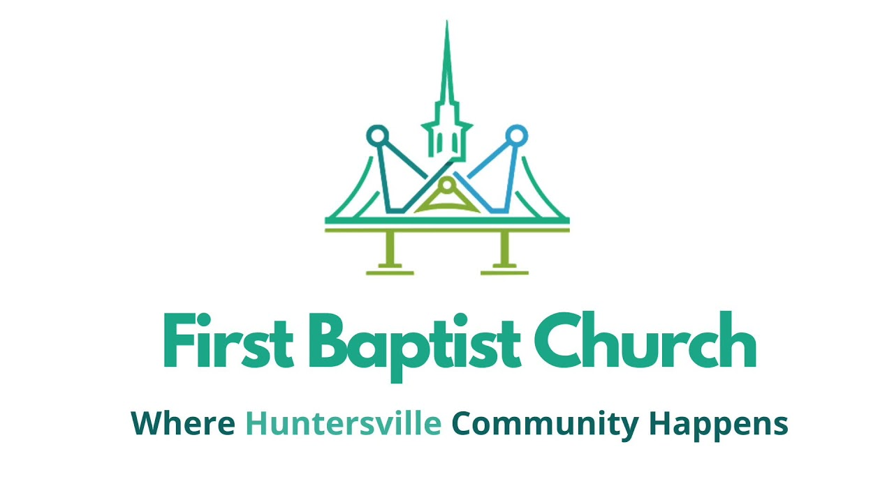

Thumbnail Design · Pick a Direction
Below are three distinct visual approaches to sermon thumbnails. Each style stays within the FBC palette
— navy #1A3040,
teal #0088b8,
warm beige #F2EAE7
— and uses Montserrat + Cormorant Garamond, the same fonts that run across the website mockups.
The series example uses Uncomfortable: Disagreements; the one-off uses Doubt Then Faith (no parent series). Watch how each style adapts when there’s no series tag.
Italic serif title over a textured navy background, a 3D cross casting a long X-shaped shadow. The same design language as your existing Shadows of the Cross series template — you flagged this as the default you liked.
Visual continuity. If you’re working through a doctrinal/biblical series, the cross + cast shadow makes every entry feel like part of one set without designing each individually.
Series name appears as italic eyebrow at top center. One-off sermons get the label "A Sunday Message" — same slot, neutral text, no awkward empty space.
Lent, Holy Week, expository series, communion, baptism — anything where reverence is the dominant feeling.
Warm beige base, massive Montserrat 900 title in navy, a teal wedge with a stylized FBC steeple-bridge mark cutting in from the right. Series gets a teal pill with episode number top-left; one-offs hide the pill entirely.
Brand-forward. Reads as a current, energetic FBC product. Same type and palette as the website hero variants — thumbnails feel like they came from the same place as the rest of the site.
Best-in-class: a colored pill with episode number ("UNCOMFORTABLE · PT 03") makes it obvious this is part of an arc. One-offs gracefully drop the pill.
Topical contemporary series (Uncomfortable, New Year New Mercies), guest preachers, anything that should feel fresh + shareable on social.
Sunset/dusk gradient with a steeple silhouette in the distance and tree foreground. Centered italic serif title overlaid in white, with a small uppercase eyebrow above. Mood-driven, photo-like — built to evoke before it informs.
Emotional pull. Best at stopping the scroll. Title carries the entire weight of the design — no logo, no chrome, just a feeling.
Series name lives as a small uppercase eyebrow above the title (between two short rules). When there’s no series, "A SUNDAY MESSAGE" fills the same slot. No layout difference between cases.
Special services (Easter, Tenebrae, Christmas Eve, Palm Sunday), one-off testimonies, vision Sundays. Less ideal for routine weekly sermons because the strong atmosphere stops feeling special when used every week.
The actual FBC logo sits centered at the top, sermon title below. Inspired directly by your March 29 Palm Sunday YouTube thumbnail where the logo carries the visual. In a sermon list, every entry says “FBC” first — recognition over interpretation.
Strongest brand recall. Same logo, every sermon — in a thumbnail grid, the brand pattern is instantly readable as "all FBC content." Excellent for Wix sermon-card lists and YouTube playlists.
Series name lives as a small letter-spaced eyebrow between two short rules, just below the logo. One-offs use "A SUNDAY MESSAGE" in the same slot — visually identical, no awkward gap.
Weekly sermon library, YouTube playlist where the brand should be the unifying thread. Trade-off: least visually distinctive sermon-to-sermon — titles do all the differentiating.
Massive italic Cormorant Garamond title with an oversized opening quote-mark watermark. Same visual language as your Editorial Pull-Quote homepage hero variant — treats every sermon title like the opening line of a chapter.
Reads as a book chapter title. The oversized quote mark adds editorial gravitas without crowding the title. Pairs well with reflective, narrative preaching.
Series sits as a small Montserrat caps eyebrow at the top — deliberately quiet. The title is the protagonist. One-offs use "A SUNDAY MESSAGE" in the same slot.
Reflective sermons, vision Sundays, pastor letters, anything where the title is the message. Trade-off: minimal series differentiation — series name doesn’t pop visually.
Three vertical color blocks in solid navy / teal / beige. Massive Montserrat 900 title sits in the teal block; episode number runs sideways down the navy block; brand name runs sideways up the beige block. Designed to survive social-media compression.
Stops the scroll. Survives heavy compression. Reads on a phone in sunlight. Looks like a contemporary Bible-app or podcast-thumbnail aesthetic.
Episode number rotated 90° on the left navy block doubles as decorative element AND series indicator. One-offs use an em-dash “—” in the same slot — reads as “not part of a series” without breaking layout.
Contemporary topical series, Instagram/Facebook shares, anywhere the thumbnail competes for attention. Trade-off: least “reverent” option — can feel commercial if used for liturgical/sacrament services.
Exactly the FBC logo graphic from your March 29 livestream thumbnail. No design layer added, no title overlay, no per-sermon text. Every sermon that needs a custom thumbnail uses this same image. The sermon title lives in the card caption text only.

Zero design effort, ever. Already approved (it’s your existing graphic). Maximum brand recognition — every sermon thumbnail is the FBC mark. No risk of design drift over time.
None — series isn’t shown in the thumbnail at all. Series, title, and date all live in the card text caption next to the thumbnail. The image itself stays identical every week.
Sermons aren’t visually distinguishable. A grid of sermon cards looks like the same thumbnail repeating — people scan by reading titles, not glancing at images. That’s either a feature (consistent brand) or a bug (browsing friction), depending on how the sermon list is used.
Research-based variants · added 5/10
After studying 225 thumbnails across 15 churches, the strongest recurring patterns are reproduced below as Styles H, I, J, K, L — each one a direct adaptation of a specific reference church’s system, restyled to use FBC’s brand palette and type.
Also included: Style D v3 (blend fix — the cream-gradient seam is gone) and Style G v2 (keeps the March 29 logo wait-card but adds room for sermon-specific description).
Pastor cutout right + bold italic-condensed title left + small circular badge top-right. Reference: Joel Osteen, NewSpring, Elevation, Andy Stanley. This is the single most-used sermon thumbnail pattern in the research.
Best conversion per template hour. Once pastor photos exist, swap title + photo, ship. This is what most churches with strong YT presence actually do.
Needs a pastor photo library. 1-2 hour studio session captures 10+ usable cutouts. Placeholder silhouette in the mockup is replaced with a real PNG (transparent bg).
Weekly sermons. Topical series. Anything where the pastor is the unifying brand element. Trade-off: not appropriate when the pastor isn’t preaching (guest speakers, missionary updates).
Thin white elliptical line frame contains all typography on a dark stage background. Reference: The Village Church (Matt Chandler). Visible hierarchy: SERMON eyebrow → WEEK number → SERIES name (serif) → sermon title (sans) → pastor. A single design signature (the ellipse) ties every thumbnail together.
Most refined system on the list. The elliptical frame is a distinctive signature element that makes the entire archive feel cohesive without each thumbnail having to be uniquely designed.
Excellent. Episode number in the WEEK slot, series name in big serif uppercase. Multi-week series read as a clear set.
Multi-week expository series, vision Sundays, sermons where you want a "premium production" feel. Higher cost: needs decent stage photography and a real pastor cutout to land.
Hard split: solid navy left + object photo right. The object (open Bible, communion bread/cup, candle, cross) is series-specific and reused across all weeks. Reference: Saddleback — Doable Discipleship: Galatians. Useful when the series is the brand, not the pastor.
No pastor photo required. Series-led design that works even without a photo library. Object photography is easier to commission — one good shot per series serves 4-8 weeks.
Outstanding. Object stays the same across all weeks, title changes per sermon. Reads as a clearly branded set without re-photographing per week.
Expository series (Romans, Galatians, etc.), communion/sacrament services, any context where an object photo carries more meaning than a person photo.
Aged paper / warm cream background + massive italic serif "The" prefix + bold serif uppercase main title. Reference: Passion City Church — The Thread. Title is the protagonist; everything else recedes.
Most distinctive. Reads as a magazine cover. Photography becomes secondary — the typography carries the brand.
Series is a small Montserrat caps label at top — deliberately quiet. The title pair (italic + bold) is the visual anchor.
Reflective sermons, pastor letters, vision Sundays, anything with a strong literary title. Trade-off: requires good title copywriting — weak titles look exposed in this style.
Hard split: dark navy textured left + bright teal right + circular pastor portrait. Title in 3 lines of white sans-serif uppercase. Teal pill carries the series. Audio waveform graphic at the bottom signals "weekly content." Reference: The Andy Stanley Leadership Podcast.
Reads as contemporary audio-first content. The waveform graphic doubles as a "this is regular weekly content" signal. Works well in mobile feeds.
Teal pill is flexible — series name for series sermons, date for one-offs. Stays branded either way.
Weekly sermons where you want a "podcast-feed" aesthetic. Best for younger demographic. Trade-off: the waveform reads as "audio podcast" — some may want a video-first signal instead.
The old Style D used a cream gradient background; the logo’s white background sat on top of cream and looked like a floating white box. Fix: background is now pure white (matches the logo seamlessly) with a top teal bar and bottom navy footer providing brand structure instead of the gradient.
Background cream gradient → pure white. Logo blends invisibly. Bottom footer became a solid navy strip with white type for clearer hierarchy.
The cream gradient gave a "warmer" feeling. The white version reads as cleaner and more modern. Brand teal stripe at top + navy footer make it feel intentionally structured.
Same as before — weekly sermon library with strongest brand recall. Now without the visual seam that bothered you.
Top 60% is the original FBC wait-card aesthetic (white background, large centered logo, "Where Huntersville Community Happens" tagline). Bottom 40% is a navy description strip showing series + sermon title (italic serif) + date. Best of both: brand recognition and per-sermon information.
The original G has zero per-sermon information — every thumbnail is identical. G v2 keeps the strong brand recognition of the wait-card while giving each sermon its own visible title and date.
Series name appears in small teal letterspaced caps above the title (matching FBC’s sermon page pattern). One-offs use "A Sunday Message" in the same slot.
The strongest compromise between effort and information. Brand-forward like G, informational like Style B. Worth strong consideration as the everyday default.
Pick one as the FBC default and I’ll apply it to the three sermons flagged for replacement (Uncomfortable Disagreements, Doubt Then Faith, Palm Sunday: Our Kinsman-Redeemer) plus optionally swap God Will Provide the Lamb to match the rest of the Shadows of the Cross series.
It’s also fine to mix — e.g., “D as the everyday default for weekly sermons, A for biblical/Lent series, C for Easter/Tenebrae.”
Or one of the 5 research-based variants + 2 updates: